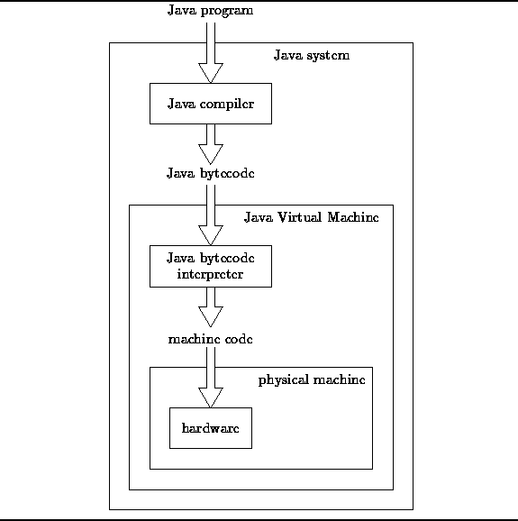

Data Structures and Algorithms
with Object-Oriented Design Patterns in Java
Data Structures and Algorithms
with Object-Oriented Design Patterns in Java
In this section we develop a detailed model
of the running time performance of Java programs.
The model developed is independent of the underlying
hardware and system software.
Rather than analyze the performance of a particular,
arbitrarily chosen physical machine,
we model the execution of a Java program
on the ``Java Virtual Machine'' (see Figure  ).
).
A direct consequence of this approach is that we lose some fidelity--the resulting model cannot predict accurately the performance of all possible hardware/software systems. On the other hand, the resulting model is still rather complex and rich in detail.

Figure: Java system overview.
 Copyright © 1998 by Bruno R. Preiss, P.Eng. All rights reserved.
Copyright © 1998 by Bruno R. Preiss, P.Eng. All rights reserved.